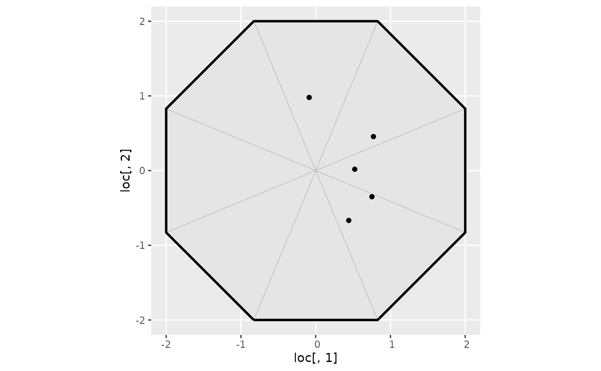

Converting inla.spde.make.A calls into the bru_mapper system
Source:vignettes/articles/mesh_mapping.Rmd
mesh_mapping.Rmd(Vignette under construction!)
Introduction
In traditional INLA code involving
inla.mesh objects and inla.spde models, the
inla.spde.make.A() function is used to construct the
component design matrix that maps between spatial/spatio-temporal
locations and the latent variables associated with mesh basis functions.
For 2-manifold meshes, such as flat and spherical meshes, the
implementation has one latent variable per mesh node, linked to
piecewise linear basis functions on the mesh triangles. For 1-manifolds
such as intervals and cyclic domains, both piecewise linear and
piecewise quadratic basis functions are supported.
The inla.spde.make.A() interface supports a variety of
features, that can be broken down in more simple building blocks. With
the inlabru bru_mapper system, these building
blocks are more easily customised for specific uses, some of which
aren’t necessarily connected to spde models, such as the
block feature that is used to aggregate rows of a design
matrix, e.g. to construct numerical integration schemes.
If you haven’t already, go read the bru_mapper
vignette for information about the various bru_mapper
classes and methods. Then come back here to continue.
Converting the basic inla.spde.make.A calls into mappers
The most basic inla.spde.make.A call is to map purely
spatial points to a mesh:
mesh <- fm_mesh_2d_inla(cbind(0, 0), offset = 2, max.edge = 10)
loc <- matrix(runif(10) * 2 - 1, 5, 2)
ggplot() +
geom_fm(data = mesh) +
geom_point(aes(loc[, 1], loc[, 2]))
#> Warning in fm_as_sfc.fm_segm(data): fm_as_sfc currently only supports
#> (multi)linestring output
A.loc <- inla.spde.make.A(mesh, loc = loc)
A.loc
#> 5 x 9 sparse Matrix of class "dgCMatrix"
#>
#> [1,] . 0.29227293 0.09984048 . . . . . 0.6078866
#> [2,] . 0.02324195 0.36614606 . . . . . 0.6106120
#> [3,] . . 0.11935641 0.1416259 . . . . 0.7390177
#> [4,] . . . 0.3522410 0.08180227 . . . 0.5659568
#> [5,] . . . . 0.19233634 0.2974006 . . 0.5102631A basic conversion of this becomes
A.loc <- fm_basis(mesh, loc = loc)
A.loc
#> 5 x 9 sparse Matrix of class "dgCMatrix"
#>
#> [1,] . 0.29227293 0.09984048 . . . . . 0.6078866
#> [2,] . 0.02324195 0.36614606 . . . . . 0.6106120
#> [3,] . . 0.11935641 0.1416259 . . . . 0.7390177
#> [4,] . . . 0.3522410 0.08180227 . . . 0.5659568
#> [5,] . . . . 0.19233634 0.2974006 . . 0.5102631but this is limited to just the basic case of evaluating on only a mesh.
With a bru_mapper, this becomes the more generally
useful
mapper <- bru_mapper(mesh)
A.loc <- ibm_jacobian(mapper, input = loc)
A.loc
#> 5 x 9 sparse Matrix of class "dgCMatrix"
#>
#> [1,] . 0.29227293 0.09984048 . . . . . 0.6078866
#> [2,] . 0.02324195 0.36614606 . . . . . 0.6106120
#> [3,] . . 0.11935641 0.1416259 . . . . 0.7390177
#> [4,] . . . 0.3522410 0.08180227 . . . 0.5659568
#> [5,] . . . . 0.19233634 0.2974006 . . 0.5102631Mapping with a precomputed location mapping
index <- c(1, 3, 5, 2, 1, 2)
inla.spde.make.A(A.loc = A.loc, index = index)
#> 6 x 9 sparse Matrix of class "dgCMatrix"
#>
#> [1,] . 0.29227293 0.09984048 . . . . . 0.6078866
#> [2,] . . 0.11935641 0.1416259 . . . . 0.7390177
#> [3,] . . . . 0.1923363 0.2974006 . . 0.5102631
#> [4,] . 0.02324195 0.36614606 . . . . . 0.6106120
#> [5,] . 0.29227293 0.09984048 . . . . . 0.6078866
#> [6,] . 0.02324195 0.36614606 . . . . . 0.6106120
mapper <- bru_mapper_taylor(jacobian = A.loc[index, , drop = FALSE])
ibm_jacobian(mapper)
#> 6 x 9 sparse Matrix of class "dgCMatrix"
#>
#> [1,] . 0.29227293 0.09984048 . . . . . 0.6078866
#> [2,] . . 0.11935641 0.1416259 . . . . 0.7390177
#> [3,] . . . . 0.1923363 0.2974006 . . 0.5102631
#> [4,] . 0.02324195 0.36614606 . . . . . 0.6106120
#> [5,] . 0.29227293 0.09984048 . . . . . 0.6078866
#> [6,] . 0.02324195 0.36614606 . . . . . 0.6106120
# For run-time indexing:
mapper <-
bru_mapper_pipe(
list(
matrix = bru_mapper_taylor(jacobian = A.loc),
index = bru_mapper_index(nrow(A.loc))
)
)
ibm_jacobian(mapper, input = list(index = index))
#> 6 x 9 sparse Matrix of class "dgCMatrix"
#>
#> [1,] . 0.29227293 0.09984048 . . . . . 0.6078866
#> [2,] . . 0.11935641 0.1416259 . . . . 0.7390177
#> [3,] . . . . 0.1923363 0.2974006 . . 0.5102631
#> [4,] . 0.02324195 0.36614606 . . . . . 0.6106120
#> [5,] . 0.29227293 0.09984048 . . . . . 0.6078866
#> [6,] . 0.02324195 0.36614606 . . . . . 0.6106120Group mapping with a group mesh
inla.spde.make.A(..., group = group.values, group.mesh = group.mesh)
mapper <- bru_mapper_multi(list(
main = bru_mapper(mesh),
group = bru_mapper(group.mesh)
))
ibm_jacobian(mapper, input = list(main = loc, group = group.values))Blockwise aggregation
Blockwise aggregation can be implemented with a
bru_mapper_aggregate mapper.
block_rescale <- "none" # one of "none", "count", "weights", "sum"
inla.spde.make.A(...,
weights = weights,
block = block,
block.rescale = block_rescale,
n.block = n_block
)Rescaling options:
-
block_rescale = "none"corresponds torescale = FALSE -
block_rescale = "count"corresponds torescale = TRUEand providing noweights, as that is interpreted as all weights being1, so rescaling by the sum of the weights is equivalent to dividing by the number of elements in each block. -
block_rescale = "weights"corresponds torescale = TRUE -
block_rescale = "sum"is not supported by the aggregation mapper.
mapper <- bru_mapper_pipe(
list(
main = bru_mapper_multi(list(main = bru_mapper(mesh), ...)),
block = bru_mapper_aggregate(
rescale = (block_rescale != "none"),
n_block = n_block
)
)
)
ibm_jacobian(mapper,
input = list(
main = list(main = loc),
block = list(block = block, weights = weights)
)
)inla.spde.make.index
ngroup <- 2
nrepl <- 3
summary(
as.data.frame(
inla.spde.make.index("field",
n.spde = mesh$n,
n.group = ngroup,
n.repl = nrepl
)
)
)
#> field field.group field.repl
#> Min. :1 Min. :1.0 Min. :1
#> 1st Qu.:3 1st Qu.:1.0 1st Qu.:1
#> Median :5 Median :1.5 Median :2
#> Mean :5 Mean :1.5 Mean :2
#> 3rd Qu.:7 3rd Qu.:2.0 3rd Qu.:3
#> Max. :9 Max. :2.0 Max. :3
mapper <- bru_mapper_multi(list(
field.main = bru_mapper(mesh),
field.group = bru_mapper_index(ngroup),
field.replicate = bru_mapper_index(nrepl)
))
summary(ibm_values(mapper, multi = TRUE, inla_f = TRUE))
#> field.main field.group field.replicate
#> Min. :1 Min. :1.0 Min. :1
#> 1st Qu.:3 1st Qu.:1.0 1st Qu.:1
#> Median :5 Median :1.5 Median :2
#> Mean :5 Mean :1.5 Mean :2
#> 3rd Qu.:7 3rd Qu.:2.0 3rd Qu.:3
#> Max. :9 Max. :2.0 Max. :3The benefit of the mapper approach here is that it encapsulates all the information, so that only the mapper needs to be carried around to code that needs it, and that it doesn’t restrict the group and replicate mappings to integer indices; the index mappers can be replaced by other mappers, e.g. to allow interpolation between group indices, with a 1d mesh mapper.